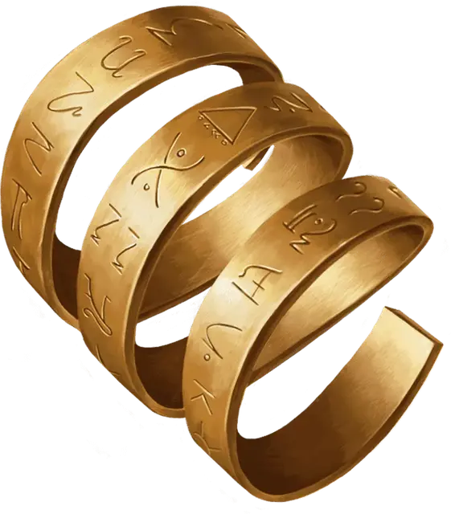

Кольцо хранения заклинаний
Ring of Spell Storing
Кольцо, редкое (требуется настройка)

Рекомендованная стоимость 4 000 ЗМ
Это кольцо сохраняет сотворённые в него заклинания и удерживает их, пока существо, носящее кольцо и настроенное на него, не использует их. Кольцо может хранить суммарно вплоть до 5 уровней заклинаний единомоментно. Когда кольцо находят, оно содержит 1к6 - 1 уровней заклинаний на выбор Мастера.
Любое существо может сотворить заклинание от 1-го уровня до 5-го уровня в кольцо, если касается его при сотворении заклинания. В таком случае заклинание не оказывает эффекта, а сохраняется в кольце. Если кольцо не может вместить заклинание, оно тратится без эффекта. Уровень использованной при сотворении заклинания ячейки определяет, сколько уровней заклинание занимает в кольце.
Пока вы носите это кольцо, вы можете сотворить любое сохранённое в нём заклинание; при этом сотворяемое заклинание будет сохранённого уровня и использовать Сл спасброска, модификатор атаки и заклинательную характеристику того, кто сотворил заклинание в кольцо, но в остальном будет считаться сотворяемым вами заклинанием. Сотворённое из кольца заклинание больше не хранится в нём, освобождая занимаемые уровни.